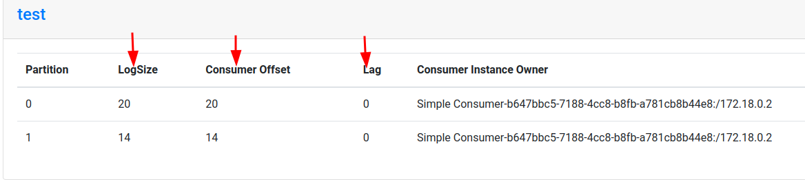

Please demo this example, and do the lab together with students, step by step
Run simple Producer / Consumer
None
30 mins
test
topicIF you haven’t done before, let’s create a test
topic
$ ~/apps/kafka/bin/kafka-topics.sh --bootstrap-server localhost:9092 \
--create --topic test --replication-factor 1 --partitions 2In a terminal
$ ~/apps/kafka/bin/kafka-console-consumer.sh \
--bootstrap-server localhost:9092 \
--property print.key=true --property key.separator=":" \
--topic testor if you have Kafkacat
$ kafkacat -q -C -b localhost:9092 -t test -f 'Partition %t[%p], offset: %o, key: %k, value: %s\n'src/main/java/x/lab03_api_intro/SimpleProducer.java.In Eclipse console, you should see output as follows:
sending : ProducerRecord(topic=test, partition=null, key=1, value=Hello world, timestamp=null)The messages should show up in Kafka console terminal !
Yay !!
src/main/java/x/lab03_api_intro/SimpleConsumer.javaThis will keep running.
src/main/java/x/lab03_api_intro/SimpleProducer.java=> In Eclipse, monitor output from two of these
programs
Hint : you may need to switch to Debug view
=> Also what is happening in Kafka console consumer?
Stop the running consumer first (in Eclipse)
Leave console consumer running.
Run two instances of the Simple Consumer (from
Eclipse)
Also run SimpleProducer from Eclipse.
How many messages each consumer get? Can you explain? :smile:
Look at partition based consumption for test topic from
Kafka manager. See screenshots below
Instructor, please explain the stats

Stop the running consumers first (in Eclipse)
Leave console consumer running.
Run three instances of the Simple Consumer (from
Eclipse)
Also run SimpleProducer from Eclipse.
How many messages each consumer get? Can you explain? :smile: